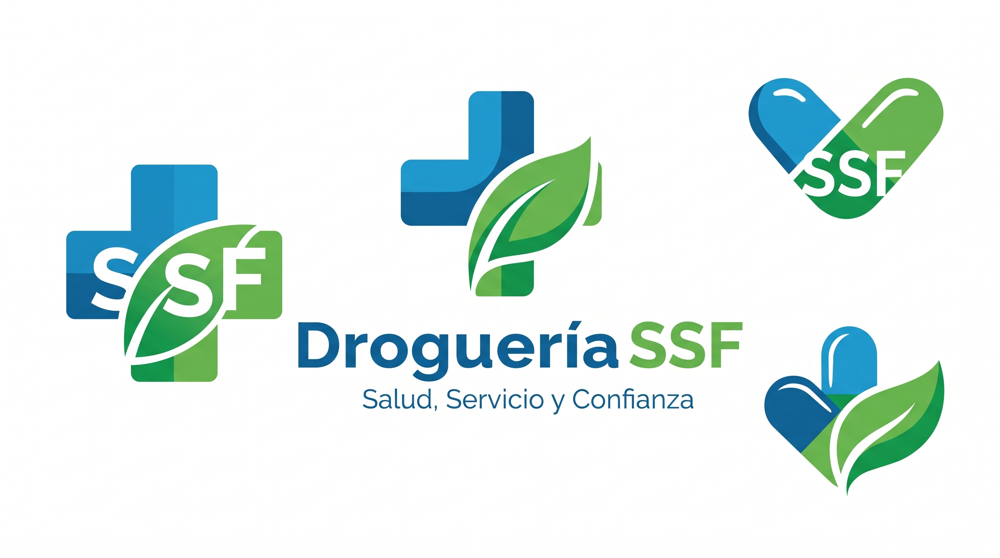

1. Información de la Droguería
Módulo básico desarrollado para la atención e inventario de la droguería rural, garantizando el registro claro de productos de salud.

Figura 1: Registro e imagen institucional de Droguería SSF.
Para consultar más información sobre la normatividad del INVIMA, visita: Portal Oficial INVIMA Colombia .
2. Catálogo de Productos
El sistema permite la clasificación de analgésicos, antibióticos y suministros de primeros auxilios.
3. Consulta de Disponibilidad
Presiona el botón para verificar el estado del inventario de la droguería: